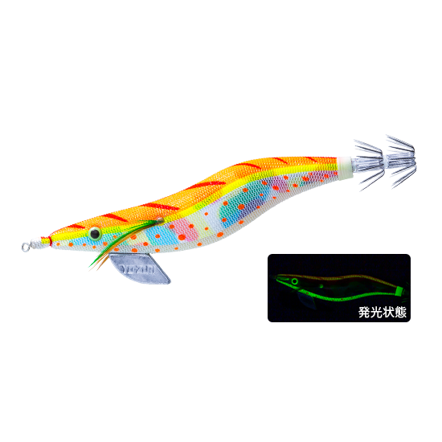
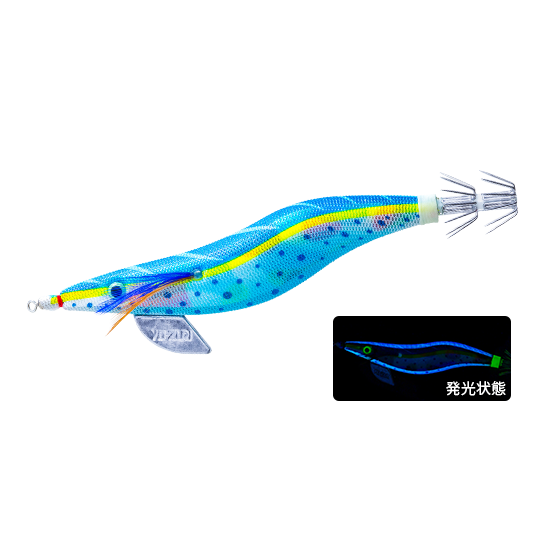
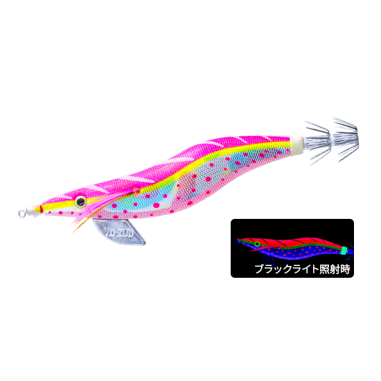
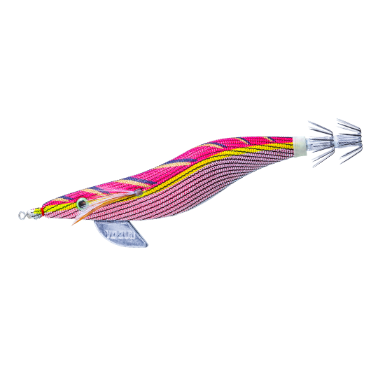

アオリーQ 大分布巻
アオリーQ 大分布巻はYO-ZURI（デュエル）のエギです。
当時の仕様をそのまま再現した、歴史が息づく復刻モデル。大きなシャクリで縦に跳ね上げる昔ながらの誘いが得意で、プレミアムアオリーQの伝説的カラーも復刻・アレンジして登場しました。2026年には3号のダウンサイズも加わっています。

画像出典:デュエル公式HP
スペック
- メーカー
- YO-ZURI（デュエル）
- タイプ
- エギ（布巻き・スナッグレスシンカー）
- サイズ・自重
- 3号 16g／3.5号 19g
- ターゲット
- アオリイカ
- 価格
- オープン価格
▼今すぐチェック

アオリーQ 大分布巻の特徴
当時の仕様を再現した、大きなシャクリで縦に誘う復刻エギ
-
当時の仕様をそのまま再現した復刻モデル
エギングの歴史を作ってきたアオリーQを、当時の仕様のまま復刻。長年の実績に裏付けられた、シンプルで信頼できる作りだ。
-
根掛かりしにくいスナッグレスシンカー
シンカーにはスナッグレスシンカーを採用。ボトムを攻めても根掛かりしにくく、安心して底付近を探れる。
-
伝説のカラーを復刻＆アレンジ
「バレンシア」「マリン」「マーブルサクラダイ」など、プレミアムアオリーQの人気カラーを、夜光やケイムラのボディで現代風にアレンジして復刻している。
アオリーQ 大分布巻の使い方
基本はキャストして着底させ、大きなシャクリで縦に跳ね上げてからフォールで抱かせる。左右のダートよりも、縦方向の大きな動きでイカに見つけてもらう誘い方が得意だ。
シャクった後はしっかりフォールの時間を取り、ラインの変化でアタリを取っていきます。
アオリーQ 大分布巻の得意な状況
高活性のイカを広く探りたい時や、ダート系のエギに反応しなくなった時に違う動きを見せたい状況が出番。
昔ながらのエギングを楽しみたい人や、アオリーQで釣ってきたベテランにもオススメの1本です。
ワンポイント
カラーはボディ（夜光・ケイムラ・ネオンフラッシュなど）と下地（マーブル・レッド・ゴールドなど）の組み合わせで選ぶのがコツです。澄み潮の日中はマーブル下地、ナイトや低光量時はレッド下地が目安になります。
オススメカラー
アオリーQ 大分布巻は全8色展開。オススメのカラーを厳選して紹介します。

LVLC ルミバレンシア伝説のカラー「バレンシア」を夜光ボディで復刻。濁りに強く、使いどころを選ばない。

SBMR スーパーブルーマリン人気カラー「マリン」の復刻。日中の澄み潮に最適な青系。

KPMS ケイピンクマーブルサクラダイ万能アピールのピンク×マーブル。ランガンで広く探る時に。

RRYK ムカシーノレッド漁師向け製品で人気だったカラーを復刻。ナイトや低光量時に強い。
画像出典:デュエル公式HP
アオリーQ 大分布巻に似ているルアー
-
 キャストランナー
クレイジーオーシャン
詳細はこちら＞
キャストランナー
クレイジーオーシャン
詳細はこちら＞
軽いシャクリでダートさせる新モデル。大きなシャクリのアオリーQと、誘い方を変えたい時の持ち替え候補。
-
 ゲキダキ カミナリ
ジャッカル
詳細はこちら＞
ゲキダキ カミナリ
ジャッカル
詳細はこちら＞
飛距離・ダート・フォールのバランスを追求した新作エギ。ダートで攻めたい時に。
-
 エギ政 改
DUO
詳細はこちら＞
エギ政 改
DUO
詳細はこちら＞
リニューアルした人気エギ。シャローから深場まで1シリーズで対応できる。